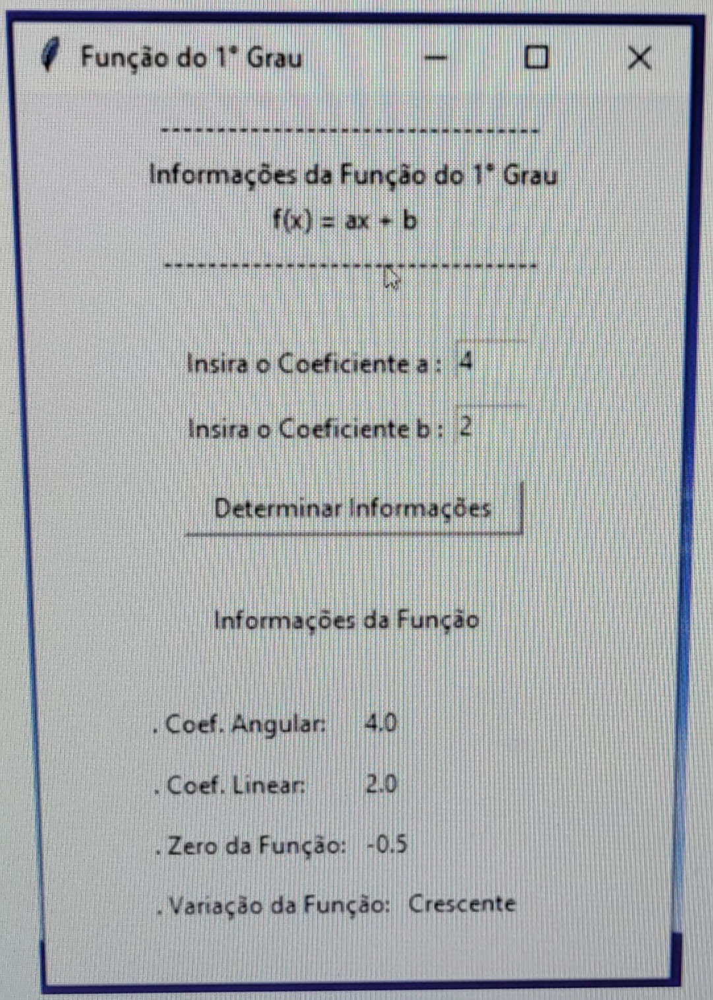

Meus projetos
Calculadora de Equação do Primeiro Grau
- Em 2022, desenvolvi um projeto utilizando Python, cujo objetivo foi criar uma calculadora de equação do primeiro grau. O programa permitia ao usuário inserir o coeficiente angular e linear da função, retornando automaticamente o zero da função e indicando se a variação era crescente ou decrescente. Esse projeto não apenas reforçou conceitos matemáticos, mas também mostrou como a programação pode ser uma ferramenta poderosa para resolver problemas de forma prática.
- As conclusões que tirei com esse projeto foram de que programar em Python é mais acessível do que eu imaginava, sendo uma linguagem versátil e fácil de aprender, permitindo a criação de projetos que vão do simples ao mais complexo. Além disso, percebi que a programação exige muito raciocínio lógico e um bom entendimento de conceitos matemáticos, como conjuntos. Também ficou claro que, assim como na matemática, a prática constante e a resolução de pequenos problemas ajudam a construir uma base sólida para projetos mais complexos, como jogos e sites. Esse aprendizado reforçou a importância da dedicação e do exercício contínuo para evoluir na programação.
